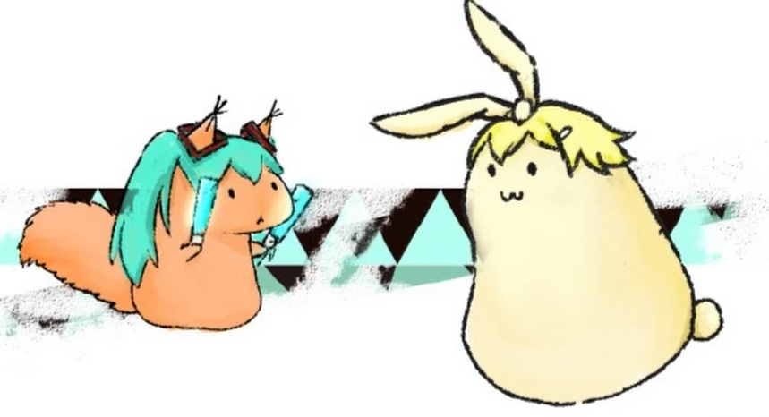

A peaceful and harmonious simulation of species spread in music enjoyment .
>>> The player act as a seed of dandelion, control the direction and fly in the wind.
>>> In each level, you can fly into the other dandelions, hit them and let their seeds go.
>>> The game would be fun to casual players by nice graphic ,and catch the biology fans with the evolutionary mechanism. It's difficult to make the mechanism a real world nature simulation, but it can get players to think more about evolution and get some mechanism.
For some reason ,we can not load the music file on a android , IOS or WebGL. But try have a try with the analysised example music is OK.
About SakuSaku

http://saengine.blogspot.com